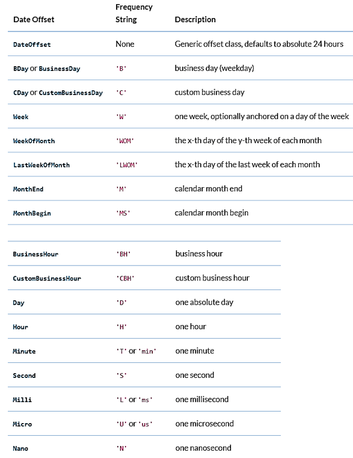

Time Series¶
# Load data set
import pandas as pd
df = pd.read_csv("https://raw.githubusercontent.com/retomarek/edap/main/edap/sampleData/flatTempHum.csv",
sep = ";")
df['time'] = pd.to_datetime(df['time'], format='%Y-%m-%d %H:%M:%S')
df.head()
| time | FlatA_Hum | FlatA_Temp | FlatB_Hum | FlatB_Temp | FlatC_Hum | FlatC_Temp | FlatD_Hum | FlatD_Temp | |
|---|---|---|---|---|---|---|---|---|---|
| 0 | 2018-10-03 00:00:00 | 53.0 | 24.43 | 38.8 | 22.40 | 44.0 | 24.5 | 49.0 | 24.43 |
| 1 | 2018-10-03 01:00:00 | 53.0 | 24.40 | 38.8 | 22.40 | 44.0 | 24.5 | 49.0 | 24.40 |
| 2 | 2018-10-03 02:00:00 | 53.0 | 24.40 | 39.3 | 22.40 | 44.7 | 24.5 | 48.3 | 24.38 |
| 3 | 2018-10-03 03:00:00 | 53.0 | 24.40 | 40.3 | 22.40 | 45.0 | 24.5 | 48.0 | 24.33 |
| 4 | 2018-10-03 04:00:00 | 53.3 | 24.40 | 41.0 | 22.37 | 45.2 | 24.5 | 47.7 | 24.30 |
Datetime index¶
# set index and remove column
df = df.set_index("time", drop=True)
# remove duplicates
df = df[~df.index.duplicated(keep='first')]
df.head()
| FlatA_Hum | FlatA_Temp | FlatB_Hum | FlatB_Temp | FlatC_Hum | FlatC_Temp | FlatD_Hum | FlatD_Temp | |
|---|---|---|---|---|---|---|---|---|
| time | ||||||||
| 2018-10-03 00:00:00 | 53.0 | 24.43 | 38.8 | 22.40 | 44.0 | 24.5 | 49.0 | 24.43 |
| 2018-10-03 01:00:00 | 53.0 | 24.40 | 38.8 | 22.40 | 44.0 | 24.5 | 49.0 | 24.40 |
| 2018-10-03 02:00:00 | 53.0 | 24.40 | 39.3 | 22.40 | 44.7 | 24.5 | 48.3 | 24.38 |
| 2018-10-03 03:00:00 | 53.0 | 24.40 | 40.3 | 22.40 | 45.0 | 24.5 | 48.0 | 24.33 |
| 2018-10-03 04:00:00 | 53.3 | 24.40 | 41.0 | 22.37 | 45.2 | 24.5 | 47.7 | 24.30 |
Note
The index column with 0, 1, 2 etc. has gone and now datetime is the index!
Upsampling¶
Increase the frequency of the samples, such as from hours to 15min
df15min = df.resample('15min').interpolate(method='linear')
df15min.head()
| FlatA_Hum | FlatA_Temp | FlatB_Hum | FlatB_Temp | FlatC_Hum | FlatC_Temp | FlatD_Hum | FlatD_Temp | |
|---|---|---|---|---|---|---|---|---|
| time | ||||||||
| 2018-10-03 00:00:00 | 53.0 | 24.4300 | 38.8 | 22.4 | 44.0 | 24.5 | 49.0 | 24.4300 |
| 2018-10-03 00:15:00 | 53.0 | 24.4225 | 38.8 | 22.4 | 44.0 | 24.5 | 49.0 | 24.4225 |
| 2018-10-03 00:30:00 | 53.0 | 24.4150 | 38.8 | 22.4 | 44.0 | 24.5 | 49.0 | 24.4150 |
| 2018-10-03 00:45:00 | 53.0 | 24.4075 | 38.8 | 22.4 | 44.0 | 24.5 | 49.0 | 24.4075 |
| 2018-10-03 01:00:00 | 53.0 | 24.4000 | 38.8 | 22.4 | 44.0 | 24.5 | 49.0 | 24.4000 |
Note
Other upsample methods are
.interpolate(method=’linear’)
.interpolate(method=’spline’, order=2) # gives more natural curve like data
.bfill()[:15] # backwards fill
.pad()[:15] # forwards fill
Note
Other Frequencies

Downsampling¶
Decrease the frequency of the samples, such as from hours to days
df.head()
| FlatA_Hum | FlatA_Temp | FlatB_Hum | FlatB_Temp | FlatC_Hum | FlatC_Temp | FlatD_Hum | FlatD_Temp | |
|---|---|---|---|---|---|---|---|---|
| time | ||||||||
| 2018-10-03 00:00:00 | 53.0 | 24.43 | 38.8 | 22.40 | 44.0 | 24.5 | 49.0 | 24.43 |
| 2018-10-03 01:00:00 | 53.0 | 24.40 | 38.8 | 22.40 | 44.0 | 24.5 | 49.0 | 24.40 |
| 2018-10-03 02:00:00 | 53.0 | 24.40 | 39.3 | 22.40 | 44.7 | 24.5 | 48.3 | 24.38 |
| 2018-10-03 03:00:00 | 53.0 | 24.40 | 40.3 | 22.40 | 45.0 | 24.5 | 48.0 | 24.33 |
| 2018-10-03 04:00:00 | 53.3 | 24.40 | 41.0 | 22.37 | 45.2 | 24.5 | 47.7 | 24.30 |
dfDaily = df.resample('D').max()
dfDaily
| FlatA_Hum | FlatA_Temp | FlatB_Hum | FlatB_Temp | FlatC_Hum | FlatC_Temp | FlatD_Hum | FlatD_Temp | |
|---|---|---|---|---|---|---|---|---|
| time | ||||||||
| 2018-10-03 | 55.8 | 24.43 | 46.8 | 22.90 | 49.7 | 24.80 | 54.3 | 24.70 |
| 2018-10-04 | 57.3 | 24.48 | 56.2 | 23.13 | 51.3 | 25.18 | 51.0 | 25.22 |
| 2018-10-05 | 53.0 | 24.47 | 51.8 | 23.60 | 50.0 | 25.75 | 55.0 | 25.37 |
| 2018-10-06 | 53.0 | 24.30 | 53.7 | 23.65 | 56.2 | 24.80 | 59.8 | 25.08 |
| 2018-10-07 | 63.2 | 24.63 | 54.0 | 23.80 | 56.5 | 24.90 | 54.8 | 24.90 |
| ... | ... | ... | ... | ... | ... | ... | ... | ... |
| 2020-09-13 | 63.0 | 26.78 | 60.8 | 26.30 | 61.3 | 26.12 | 60.5 | 26.60 |
| 2020-09-14 | 64.5 | 26.62 | 63.7 | 26.72 | 64.2 | 26.27 | 64.0 | 26.63 |
| 2020-09-15 | 69.0 | 26.80 | 62.5 | 26.53 | 62.8 | 26.67 | 64.5 | 26.90 |
| 2020-09-16 | NaN | NaN | NaN | NaN | NaN | NaN | NaN | NaN |
| 2020-09-17 | NaN | NaN | NaN | NaN | NaN | NaN | NaN | NaN |
716 rows × 8 columns
Note
Other downsample methods are
.min()
.max()
.median()
.mean()
.sum()
etc.